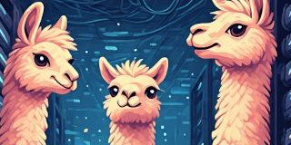
A bash shell script to run a single prompt against any or all of your locally installed ollama models,
saving the output and performance statistics as easily navigable web pages.
Tech: Bash, Ollama
Founded: 2025
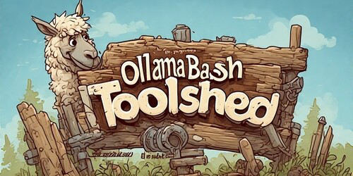
Bash scripts to chat with tool using models. Add new tools to your shed with ease. Runs on Ollama.
Tech: Bash, Ollama
Founded: 2025
A bash script to start a chat room between all, or some, of your models running on ollama.
Tech: Bash, Ollama
Founded: 2025
Extract a list of reference links and a list of related topics from any page on the English Wikipedia. Remove the distraction of prose written by others!
Tech: PHP 7, Wikimedia API
Founded: 2020
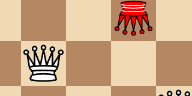
The Eight Queens chess game - Can you place 8 queens on the board with none under attack? A web game inspired by the classic math puzzle.
Tech: Javascript, React, Chessboard.jsx
Founded: 2019
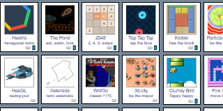
Your own games website, filled with open source goodness! Automated installation of a plethora of open source web games. Fully customizable.
Tech: PHP 7, Git
Founded: 2016
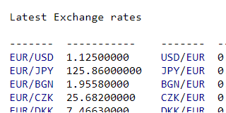
Currency Exchange Rates Website with data from: The European Central Bank, The Swiss National Bank, The Bank of Israel, The Central Bank of the Russian Federation, and The Reserve Bank of Australia.
Tech: PHP 7, SQLite, Financial APIs
Founded: 2019
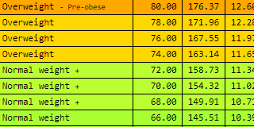
Multi-weight Body Mass Index (BMI) table based on your height, age and sex, with calculated Body Fat/Lean Percentage, Base Metabolic Rate (BMR) and Total Daily Energy Expenditure (TDEE) for various activity levels.
Tech: PHP 7
Founded: 2019
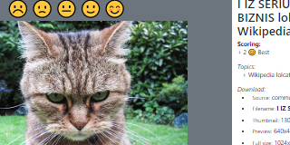
Crowdsourced ratings website for freely licensed images and media from Wikimedia Commons.
Tech: PHP, SQLite, Wikimedia API
Founded: 2017
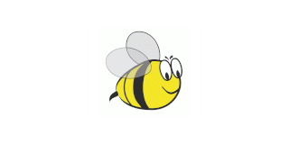
MediaWiki Query API wrapper that easily gets Category and Media file information into simple PHP arrays. Fine-tuned for WikiMedia Commmons.
Tech: PHP, MediaWiki API
Founded: 2017
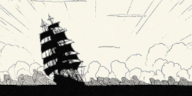
Attogram Router for PHP 7 - small, flexible, and surprisingly powerful.
Tech: PHP 7
Founded: 2017
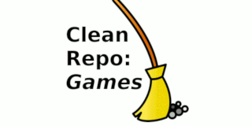
Clean Repo: Games - a collaborative project to find and remove hidden tracking codes, advertising, trojans and excessive promotional content from open source game repositories.
Founded: 2019
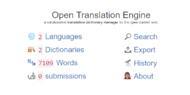
A collaborative translation dictionary manager for the open content web.
Tech: PHP, SQLite / MySQL
Founded: 2001
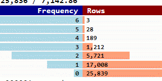
Frequency distribution and timings for PHP rand(), mt_rand(), random_int(), and SQLite ORDER BY RANDOM()
Tech: PHP, SQLite
Founded: 2017
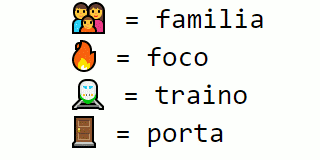
Open content translation dictionary files.
Founded: 2016
React component to show ever changing content.
Tech: Javascript, React
Founded: 2019
Our Git repository service provider. Started with the migration of the Open Translation Engine SVN repository from SourceForge.
Founded: 2014